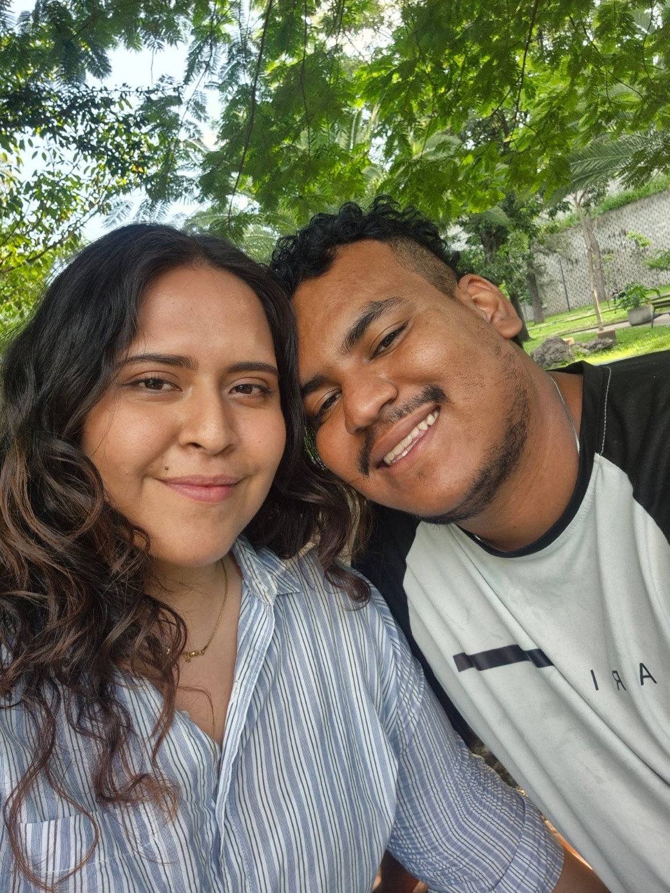

16 · 05 · 2026
Nuestra primera cita
Fuimos a comer y terminamos pasando toda la tarde platicando. No hubo presión ni necesidad de aparentar nada; simplemente todo se dio de una forma tan natural que las horas parecieron pasar sin que me diera cuenta.
Mientras más te escuchaba y más te conocía, más ganas tenía de seguir ahí contigo. Ese día hubo algo dentro de mí que se sintió distinto. No sabía todavía todo lo que viviríamos, pero sí sentí una certeza muy fuerte: quería seguir conociéndote y quería que fueras tú.
“Fui a esa cita con ganas de conocerte un poco más y regresé con la sensación de querer descubrir contigo todo lo que aún nos faltaba por vivir.”